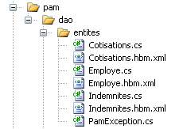
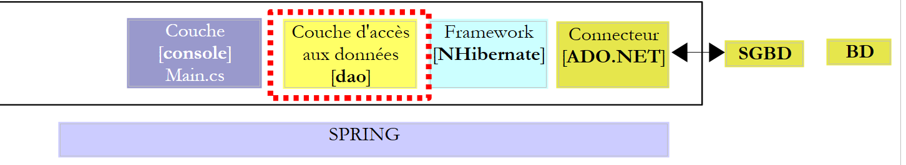
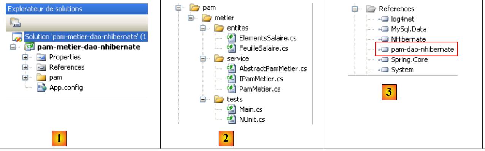
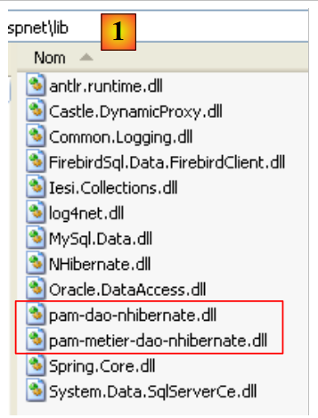

7. التطبيق [SimuPaie] – الإصدار 3 – بنية ثلاثية الطبقات مع NHibernate
قراءات موصى بها: "لغة C# 2008، الفصل 4: بنى ثلاثية الطبقات، اختبارات NUnit، إطار عمل Spring".
7.1. البنية العامة للتطبيق
سيكون للتطبيق [SimuPaie] الآن البنية ثلاثية الطبقات التالية:
 |
- ستتولى الطبقة [1-dao] (dao=Data Access Object) الوصول إلى البيانات.
- الطبقة [2-métier] ستتولى الجانب الوظيفي للتطبيق، أي حساب الرواتب.
- الطبقة [3-ui] (ui=User Interface) ستتولى عرض البيانات للمستخدم وتنفيذ طلباته. نسمي [Application] مجموعة الوحدات التي تضمن هذه الوظيفة. وهي واجهة التواصل مع المستخدم.
- ستصبح الطبقات الثلاث مستقلة بفضل استخدام واجهات .NET
- سيتم تحقيق تكامل الطبقات المختلفة بواسطة Spring IoC
تتم معالجة طلب العميل وفقًا للخطوات التالية:
- يقدم العميل طلبًا إلى التطبيق.
- تقوم التطبيق بمعالجة هذا الطلب. وللقيام بذلك، قد تحتاج إلى مساعدة الطبقة [métier] التي قد تحتاج بدورها إلى الطبقة [dao] إذا كان من الضروري تبادل البيانات مع قاعدة البيانات.
- يتلقى التطبيق ردًا من الطبقة [métier]. وبناءً على هذا الرد، يرسل التطبيق العرض (= الرد) المناسب إلى العميل.
لنأخذ مثال حساب راتب مربية أطفال. سيتطلب ذلك عدة خطوات:
 |
- سيتعين على الطبقة [ui] أن تطلب من المستخدم
- بمعلومات عن هوية الشخص الذي نريد حساب راتبه
- عدد أيام عملها
- عدد ساعات العمل
- ولذلك، سيتعين عليها أن تعرض عليه قائمة بالأشخاص (الاسم، الاسم الأول، SS) الموجودين في الجدول [EMPLOYES] حتى يختار المستخدم أحدهم. ستستخدم الطبقة [ui] المسار [2, 3, 4, 5, 6, 7] للحصول عليها. العملية [2] هي طلب قائمة الموظفين، والعملية [7] هي الرد على هذا الطلب. وبعد ذلك، يمكن للطبقة [ui] عرض قائمة الموظفين للمستخدم عبر [8].
- سيقوم المستخدم بإرسال عدد أيام العمل وعدد ساعات العمل إلى الطبقة [ui]. هذه هي العملية [1] المذكورة أعلاه. خلال هذه الخطوة، يتفاعل المستخدم فقط مع الطبقة [ui]. وهذه الطبقة هي التي ستتحقق بشكل خاص من صحة البيانات المدخلة. وبمجرد الانتهاء من ذلك، سيطلب المستخدم حساب الراتب.
- ستطلب الطبقة [ui] من الطبقة الوظيفية إجراء هذا الحساب. ولهذا الغرض، سترسل إليها البيانات التي تلقتها من المستخدم. هذه هي العملية [2].
- تحتاج الطبقة [metier] إلى بعض المعلومات لإنجاز عملها:
- معلومات أكثر شمولاً عن الشخص (العنوان، الرقم، ...)
- التعويضات المرتبطة بمؤشره
- معدلات الاشتراكات الاجتماعية المختلفة التي يجب خصمها من الراتب الإجمالي
وستطلب هذه المعلومات من الطبقة [dao] عبر المسار [3, 4, 5, 6]. [3] هي الطلب الأولي و [6] هي الرد على هذا الطلب.
- وبعد الحصول على جميع البيانات التي تحتاجها، تقوم الطبقة [metier] بحساب راتب الشخص الذي اختاره المستخدم.
- يمكن للطبقة [metier] الآن الرد على الطلب المقدم من الطبقة [ui] في (د). هذا هو المسار [7].
- ستقوم الطبقة [ui] بتنسيق هذه النتائج لعرضها على المستخدم في شكل مناسب ثم عرضها. وهذا هو المسار [8].
- يمكننا أن نتصور أن هذه النتائج يجب تخزينها في ملف أو قاعدة بيانات. ويمكن القيام بذلك تلقائيًا. في هذه الحالة، بعد العملية (f)، ستطلب الطبقة [metier] من الطبقة [dao] تسجيل النتائج. وسيكون المسار هو [3, 4, 5, 6]. ويمكن القيام بذلك أيضًا بناءً على طلب المستخدم. وسيكون المسار [1-8] هو الذي سيستخدمه دورة الطلب - الاستجابة.
نرى في هذا الوصف أن الطبقة تستخدم موارد الطبقة الموجودة على يمينها، وليس أبدًا تلك الموجودة على يسارها.
سيكون أول تطبيق لهذه البنية ثلاثية الطبقات هو تطبيق ASP.NET حيث
- سيتم تنفيذ الطبقتين [dao] و [metier] بواسطة DLL
- سيتم تنفيذ الطبقة [ui] بواسطة نموذج الويب الخاص بالإصدار 1 (انظر الفقرة 4.2.1).
نبدأ بتنفيذ الطبقة [dao] باستخدام إطار العمل NHibernate.
7.2. طبقة [dao] للوصول إلى البيانات
 |
7.2.1. مشروع Visual Studio C# للطبقة [dao]
مشروع Visual Studio لطبقة [dao] هو التالي:
 |
- في [1]، المشروع ككل
- في [2]، الفئات المختلفة للمشروع
- في [3]، مراجع المشروع.
- في [4]، مجلد [lib] الذي تم فيه تجميع ملفات DLL اللازمة للمشاريع المختلفة التي ستتبع
في مراجع [3] للمشروع، نجد DLL التالية:
- NHibernate: لـ ORM NHibernate
- MySql.Data: برنامج التشغيل ADO.NET لـ SGBD MySQL
- Spring.Core: لإطار عمل Spring
- log4net: مكتبة سجلات
- nunit.framework: مكتبة للاختبارات الفردية
تم أخذ هذه المراجع من المجلد [lib] [4]. يجب التأكد من أن خاصية "نسخة محلية" لجميع هذه المراجع مضبوطة على "True" [5]:
 |
7.2.2. كيانات الطبقة [dao]
 |
تم تجميع الكيانات (الكائنات) اللازمة للطبقة [dao] في المجلد [entites] الخاص بالمشروع. بعضها معروف لنا بالفعل: [Cotisations] الموصوفة في الفقرة 6.3.2.1، [Employe] الموصوفة في الفقرة 6.3.2.3، [Indemnites] الموصوفة في الفقرة 6.3.2.2. وهي جميعها موجودة في مساحة الأسماء [Pam.Dao.Entites].
تتطور الفئة [Employe] على النحو التالي:
namespace Pam.Dao.Entites {
public class Employe {
// الخصائص التلقائية
public virtual int Id { get; set; }
public virtual int Version { get; set; }
public virtual string SS { get; set; }
public virtual string Nom { get; set; }
public virtual string Prenom { get; set; }
public virtual string Adresse { get; set; }
public virtual string Ville { get; set; }
public virtual string CodePostal { get; set; }
public virtual Indemnites Indemnites { get; set; }
// المنشئون
public Employe() {
}
// ToString
public override string ToString() {
return string.Format("[{0},{1},{2},{3},{4},{5},{6}]", SS, Nom, Prenom, Adresse, Ville, CodePostal, Indemnites);
}
}
}
7.2.3. الفئة [PamException]
الطبقة [dao] مكلفة بتبادل البيانات مع مصدر خارجي. قد يفشل هذا التبادل. على سبيل المثال، إذا تم طلب المعلومات من خدمة بعيدة على الإنترنت، فسيفشل الحصول عليها في حالة حدوث أي عطل في الشبكة. في هذا النوع من الأخطاء، من المعتاد في Java إطلاق استثناء. إذا لم يكن الاستثناء من النوع [RunTimeException] أو مشتقًا منه، فيجب الإشارة في توقيع الأسلوب إلى أن هذا الأسلوب يطلق (throws) استثناءً. في .NET، جميع الاستثناءات غير خاضعة للرقابة، c.a.d. مماثلة لنوع [RunTimeException] في Java. وبالتالي، لا داعي للإعلان عن أن الطرق [GetAllIdentitesEmployes, GetEmploye, GetCotisations] قد تطلق استثناءً.
ومع ذلك، من المفيد التمييز بين الاستثناءات لأن معالجتها قد تختلف. وبالتالي، يمكن كتابة الكود الذي يدير أنواعًا مختلفة من الاستثناءات على النحو التالي:
try{
... code pouvant générer divers types d'exceptions
}catch (Exception1 ex1){
...on gère un type d'exceptions
}catch (Exception2 ex2){
...on gère un autre type d'exceptions
}finally{
...
}
لذلك نقوم بإنشاء نوع من الاستثناءات لطبقة [dao] في تطبيقنا. وهو النوع [PamException] التالي:
using System;
namespace Pam.Dao.Entites {
public class PamException : Exception {
// رمز الخطأ
public int Code { get; set; }
// المنشئون
public PamException() {
}
public PamException(int Code)
: base() {
this.Code = Code;
}
public PamException(string message, int Code)
: base(message) {
this.Code = Code;
}
public PamException(string message, Exception ex, int Code)
: base(message, ex) {
this.Code = Code;
}
}
}
- السطر 2: تنتمي الفئة إلى مساحة الأسماء [Pam.Dao.Entites]
- السطر 4: الفئة مشتقة من الفئة [Exception]
- السطر 7: لها خاصية عامة [Code] وهي رمز خطأ
- سنستخدم في طبقتنا [dao] نوعين من المنشئ:
- المنشئ الموجود في الأسطر 18-21 والذي يمكن استخدامه كما هو موضح أدناه:
- (تابع)
- أو المنشئ الموجود في الأسطر 23-26 والمخصص لإعادة توجيه استثناء حدث بالفعل عن طريق تغليفه في استثناء من النوع [PamException]:
try{
....
}catch (IOException ex){
// تغليف الاستثناء
throw new PamException("Problème d'accès aux données",ex,10);
}
تتميز هذه الطريقة الثانية بأنها لا تفقد المعلومات التي قد تحتوي عليها الاستثناء الأول.
7.2.4. ملفات جداول التعيين <--> فئات NHibernate
لنعد إلى بنية التطبيق:
 |
عند القراءة، يستخدم إطار العمل NHibernate بيانات قاعدة البيانات ويحولها إلى كائنات قدمنا فئاتها للتو. وعند الكتابة، يقوم بالعكس: انطلاقًا من الكائنات، يقوم بإنشاء وتحديث وحذف الصفوف في جداول قاعدة البيانات. وقد تم بالفعل عرض الملفات التي تضمن التحويل بين الجداول <--> الفئات:
- الملف [Cotisations.hbm.xml] المقدم في الفقرة 6.3.2.1 يقوم بالمطابقة بين الجدول [COTISATIONS] والفئة [Cotisations]
<?xml version="1.0" encoding="utf-8" ?>
<hibernate-mapping xmlns="urn:nhibernate-mapping-2.2"
namespace="Pam.Dao.Entites" assembly="pam-dao-nhibernate">
<class name="Cotisations" table="COTISATIONS">
<id name="Id" column="ID">
<generator class="native" />
</id>
<version name="Version" column="VERSION"/>
<property name="CsgRds" column="CSGRDS" not-null="true"/>
<property name="Csgd" column="CSGD" not-null="true"/>
<property name="Retraite" column="RETRAITE" not-null="true"/>
<property name="Secu" column="SECU" not-null="true"/>
</class>
</hibernate-mapping>
- الملف [Employe.hbm.xml] الوارد في الفقرة 6.3.2.3 يربط بين الجدول [EMPLOYES] والفئة [Employe]
<?xml version="1.0" encoding="utf-8" ?>
<hibernate-mapping xmlns="urn:nhibernate-mapping-2.2"
namespace="Pam.Dao.Entites" assembly="pam-dao-nhibernate">
<class name="Employe" table="EMPLOYES">
<id name="Id" column="ID">
<generator class="native" />
</id>
<version name="Version" column="VERSION"/>
<property name="SS" column="SS" length="15" not-null="true" unique="true"/>
<property name="Nom" column="NOM" length="30" not-null="true"/>
<property name="Prenom" column="PRENOM" length="20" not-null="true"/>
<property name="Adresse" column="ADRESSE" length="50" not-null="true" />
<property name="Ville" column="VILLE" length="30" not-null="true"/>
<property name="CodePostal" column="CP" length="5" not-null="true"/>
<many-to-one name="Indemnites" column="INDEMNITE_ID" cascade="save-update" lazy="false"/>
</class>
</hibernate-mapping>
- الملف [Indemnites.hbm.xml] الوارد في الفقرة 6.3.2.2 يربط بين الجدول [INDEMNITES] والفئة [Indemnites]
<?xml version="1.0" encoding="utf-8" ?>
<hibernate-mapping xmlns="urn:nhibernate-mapping-2.2"
namespace="Pam.Dao.Entites" assembly="pam-dao-nhibernate">
<class name="Indemnites" table="INDEMNITES">
<id name="Id" column="ID">
<generator class="native" />
</id>
<version name="Version" column="VERSION"/>
<property name="Indice" column="INDICE" not-null="true" unique="true"/>
<property name="BaseHeure" column="BASE_HEURE" not-null="true"/>
<property name="EntretienJour" column="ENTRETIEN_JOUR" not-null="true"/>
<property name="RepasJour" column="REPAS_JOUR" not-null="true" />
<property name="IndemnitesCp" column="INDEMNITES_CP" not-null="true"/>
</class>
</hibernate-mapping>
تجدر الإشارة إلى أنه في علامة <hibernate-mapping> لهذه الملفات (السطر 2)، توجد السمات التالية:
- namespace : Pam.Dao.Entites. يجب أن توجد الفئات [Cotisations] و [Employe] و [Indemnites] في مساحة الأسماء هذه.
- assembly: pam-dao-nhibernate. يجب تغليف ملفات التعيين [*.hbm.xml] في ملف DLL باسم [pam-dao-nhibernate]. للحصول على هذه النتيجة، يتم تكوين مشروع C# على النحو التالي:
 |
- في [1]، يُسمى تجميع المشروع [pam-dao-nhibernate]
- في [2]، يتم دمج ملفات التعيين [*.hbm.xml] في تجميع المشروع
7.2.5. الواجهة [IPamDao] للطبقة [dao]
لنعد إلى بنية تطبيقنا:
 |
في الحالات البسيطة، يمكننا البدء من الطبقة [metier] لاكتشاف واجهات التطبيق. للعمل، تحتاج إلى بيانات:
- متوفرة بالفعل في الملفات أو قواعد البيانات أو عبر الشبكة. يتم توفيرها بواسطة الطبقة [dao].
- غير متوفرة بعد. يتم توفيرها في هذه الحالة من خلال الطبقة [ui] التي تحصل عليها من مستخدم التطبيق.
ما هي الواجهة التي يجب أن توفرها الطبقة [dao] للطبقة [metier]؟ ما هي التفاعلات الممكنة بين هاتين الطبقتين؟ يجب أن توفر الطبقة [dao] البيانات التالية للطبقة [metier]:
- قائمة بالمربيات لتمكين المستخدم من اختيار واحدة بعينها
- معلومات كاملة عن الشخص المختار (العنوان، الرقم التعريفي، ...)
- البدلات المرتبطة مؤشر الشخص
- معدلات الاشتراكات الاجتماعية المختلفة
هذه المعلومات معروفة بالفعل قبل حساب الراتب ويمكن بالتالي تخزينها. في الاتجاه [metier] -> [dao]، يمكن للطبقة [metier] أن تطلب من الطبقة [dao] تسجيل نتيجة حساب الراتب. لن نقوم بذلك هنا.
باستخدام هذه المعلومات، يمكننا محاولة وضع تعريف أولي لواجهة الطبقة [dao]:
using Pam.Dao.Entites;
namespace Pam.Dao.Service {
public interface IPamDao {
// قائمة بجميع هويات الموظفين
Employe[] GetAllIdentitesEmployes();
// موظف معين مع مستحقاته
Employe GetEmploye(string ss);
// قائمة بجميع الاشتراكات
Cotisations GetCotisations();
}
}
- السطر 1: يتم استيراد مساحة أسماء كيانات الطبقة [dao].
- السطر 3: الطبقة [dao] موجودة في مساحة أسماء [Pam.Dao.Service]. يمكن إنشاء عناصر مساحة الاسم [Pam.Dao.Entites] في عدة نسخ. يتم إنشاء عناصر مساحة الاسم [Pam.Dao.Service] في نسخة واحدة (singleton). وهذا ما برر اختيار أسماء مساحات الأسماء.
- السطر 4: تسمى الواجهة [IPamDao]. وهي تحدد ثلاث طرق:
- السطر 6، [GetAllIdentitesEmployes] تُرجع مصفوفة من الكائنات من النوع [Employe] التي تمثل قائمة المربيات في شكل مبسط (الاسم، الاسم الأول، SS).
- السطر 8، [GetEmploye] تُرجع كائن [Employe]: الموظف الذي يحمل رقم الضمان الاجتماعي الذي تم تمريره كمعلمة إلى الطريقة مع التعويضات المرتبطة بمؤشره.
- السطر 10، [GetCotisations] يُرجع الكائن [Cotisations] الذي يغلف معدلات الاشتراكات الاجتماعية المختلفة التي يجب خصمها من الراتب الإجمالي.
7.3. تنفيذ واختبار طبقة [dao]
7.3.1. مشروع Visual Studio
تم عرض مشروع Visual Studio بالفعل. وللتذكير:
 |
- في [1]، المشروع في مجمله
- في [2]، الفئات المختلفة للمشروع. يحتوي المجلد [entites] على الكيانات التي تعالجها الطبقة [dao] بالإضافة إلى ملفات التعيين NHibernate. يحتوي المجلد [service] على واجهة [IPamDao] وتنفيذها [PamDaoNHibernate]. يحتوي المجلد [tests] على اختبار وحدة التحكم [Main.cs] واختبار وحدة [NUnit.cs].
- في [3]، مراجع المشروع.
7.3.2. برنامج اختبار وحدة التحكم [Main.cs]
يتم تنفيذ برنامج الاختبار [Main.cs] في البنية التالية:
 |
وهو مسؤول عن اختبار أساليب واجهة [IPamDao]. قد يكون المثال الأساسي كما يلي:
using System;
using Pam.Dao.Entites;
using Pam.Dao.Service;
using Spring.Context.Support;
namespace Pam.Dao.Tests {
public class MainPamDaoTests {
public static void Main() {
try {
// إنشاء مثيل الطبقة [dao]
IPamDao pamDao = (IPamDao)ContextRegistry.GetContext().GetObject("pamdao");
// قائمة بهويات الموظفين
foreach (Employe Employe in pamDao.GetAllIdentitesEmployes()) {
Console.WriteLine(Employe.ToString());
}
// موظف مع مستحقاته
Console.WriteLine("------------------------------------");
Console.WriteLine(pamDao.GetEmploye("254104940426058"));
Console.WriteLine("------------------------------------");
// قائمة الاشتراكات
Cotisations cotisations = pamDao.GetCotisations();
Console.WriteLine(cotisations.ToString());
} catch (Exception ex) {
// عرض الاستثناء
Console.WriteLine(ex.ToString());
}
//استراحة
Console.ReadLine();
}
}
}
- السطر 11: يُطلب من Spring مرجعًا على الطبقة [dao].
- الأسطر 13-15: اختبار الطريقة [GetAllIdentitesEmployes] للواجهة [IPamDao]
- السطر 18: اختبار الطريقة [GetEmploye] للواجهة [IPamDao]
- السطر 21: اختبار الطريقة [GetCotisations] للواجهة [IPamDao]
يتم تكوين Spring و NHibernate و log4net بواسطة ملف [App.config] التالي:
<?xml version="1.0" encoding="utf-8" ?>
<configuration>
<!-- أقسام التكوين -->
<configSections>
<section name="log4net" type="log4net.Config.Log4NetConfigurationSectionHandler,log4net" />
<sectionGroup name="spring">
<section name="objects" type="Spring.Context.Support.DefaultSectionHandler, Spring.Core" />
<section name="context" type="Spring.Context.Support.ContextHandler, Spring.Core" />
</sectionGroup>
<section name="hibernate-configuration" type="NHibernate.Cfg.ConfigurationSectionHandler, NHibernate" />
</configSections>
<!-- تكوين Spring -->
<spring>
<context>
<resource uri="config://spring/objects" />
</context>
<objects xmlns="http://www.springframework.net">
<object id="pamdao" type="Pam.Dao.Service.PamDaoNHibernate, pam-dao-nhibernate" init-method="init" destroy-method="destroy"/>
</objects>
</spring>
<!-- تكوين NHibernate -->
<hibernate-configuration xmlns="urn:nhibernate-configuration-2.2">
<session-factory>
<property name="connection.provider">NHibernate.Connection.DriverConnectionProvider</property>
<property name="connection.driver_class">NHibernate.Driver.MySqlDataDriver</property>
<property name="dialect">NHibernate.Dialect.MySQLDialect</property>
<property name="connection.connection_string">
Server=localhost;Database=dbpam_nhibernate;Uid=root;Pwd=;
</property>
<property name="show_sql">false</property>
<mapping assembly="pam-dao-nhibernate"/>
</session-factory>
</hibernate-configuration>
<!-- يحتوي هذا القسم على إعدادات تكوين log4net -->
<!-- NOTE IMPORTANTE: السجلات غير نشطة بشكل افتراضي. يجب تفعيلها برمجيًا
avec l'instruction log4net.Config.XmlConfigurator.Configure();
! -->
<log4net>
...
</log4net>
</configuration>
تم شرح تكوين NHibernate (السطر 10، الأسطر 25-36) في الفقرة 6.3.1. تجدر الإشارة إلى السطر 34 الذي يشير إلى أن ملفات التعيين موجودة في التجميع [pam-dao-nhibernate]. هذا هو تجميع المشروع.
يتم تكوين Spring في الأسطر 6-9 و15-22. يحدد السطر 20 الكائن [pamdao] الذي يستخدمه برنامج وحدة التحكم [Main.cs]. تحتوي العلامة <object> هنا على السمات التالية:
- type: يحدد الفئة المراد إنشاء مثيل لها. الفئة [PamDaoNHibernate] هي التي تنفذ واجهة [IPamDao]. وستوجد في DLL [pam-dao-nhibernate] للمشروع.
- init-method: طريقة الفئة [PamDaoNHibernate] التي يجب تنفيذها بعد إنشاء مثيل للفئة
- destroy-method: طريقة الفئة [PamDaoNHibernate] التي يجب تنفيذها عند تدمير حاوية Spring في نهاية تنفيذ المشروع.
يؤدي التنفيذ باستخدام قاعدة البيانات الموضحة في الفقرة 6.2 إلى ظهور النتيجة التالية على وحدة التحكم:
- السطران 1-2: الموظفان من النوع [Employe] مع المعلومات التالية فقط [SS, Nom, Prenom]
- السطر 4: الموظف من النوع [Employe] الذي يحمل رقم الضمان الاجتماعي [254104940426058]
- السطر 5: معدلات الاشتراكات
7.3.3. كتابة الفئة [PamDaoNHibernate]
 |
الواجهة [IPamDao] التي تم تنفيذها بواسطة الطبقة [dao] هي كما يلي:
using Pam.Dao.Entites;
namespace Pam.Dao.Service {
public interface IPamDao {
// قائمة بجميع هويات الموظفين
Employe[] GetAllIdentitesEmployes();
// موظف معين مع بدلاته
Employe GetEmploye(string ss);
// قائمة بجميع الاشتراكات
Cotisations GetCotisations();
}
}
السؤال: اكتب كود الفئة [PamDaoNHibernate] التي تنفذ الواجهة [IPamDao] المذكورة أعلاه باستخدام إطار العمل NHibernate المُهيأ كما تم عرضه سابقًا. سنقوم أيضًا بتنفيذ طريقتي init و destroy اللتين يتم تنفيذهما بواسطة Spring. ستقوم الطريقة init بإنشاء SessionFactory التي سنحصل منها على كائنات Session. ستقوم الطريقة destroy بإغلاق هذه الطريقة SessionFactory. سنستعين بالأمثلة الواردة في الفقرة 6.5.
القيود:
نفترض أن بعض البيانات المطلوبة من الطبقة [dao] يمكن تخزينها بالكامل في الذاكرة. وبالتالي، لتحسين الأداء، ستخزن الفئة [PamDaoNHibernate]:
- الجدول [EMPLOYES] في شكل (SS، NOM، PRENOM) المطلوبة بواسطة الطريقة [GetAllIdentitesEmployes] في شكل مصفوفة من الكائنات من النوع [Employe]
- الجدول [COTISATIONS] في شكل كائن واحد من النوع [Cotisations]
سيتم ذلك في الطريقة [init] للفئة. قد يكون الهيكل الأساسي للفئة [PamDaoNHibernate] كما يلي:
using System;
...
namespace Pam.Dao.Service {
class PamDaoNHibernate : IPamDao {
// الحقول الخاصة
private Cotisations cotisations;
private Employe[] employes;
private ISessionFactory sessionFactory = null;
// التهيئة
public void init() {
try {
// تهيئة المصنع
sessionFactory = new Configuration().Configure().BuildSessionFactory();
// استرداد معدلات الاشتراكات والموظفين لتخزينها في ذاكرة التخزين المؤقت
.......................
}
// إغلاق SessionFactory
public void destroy() {
if (sessionFactory != null) {
sessionFactory.Close();
}
}
// قائمة بجميع هويات الموظفين
public Employe[] GetAllIdentitesEmployes() {
return employes;
}
// موظف معين مع مستحقاته
public Employe GetEmploye(string ss) {
................................
}
// قائمة الاشتراكات
public Cotisations GetCotisations() {
return cotisations;
}
}
}
7.3.4. اختبارات وحدة مع NUnit
قراءات موصى بها: "لغة C# 2008، الفصل 4: بنى ثلاثية الطبقات، اختبارات NUnit، إطار عمل Spring".
كان الاختبار السابق بصريًا: كنا نتحقق على الشاشة من حصولنا على النتائج المتوقعة. هذه طريقة غير كافية في بيئة العمل. يجب أن تكون الاختبارات آلية قدر الإمكان وأن تهدف إلى عدم الحاجة إلى أي تدخل بشري. فالإنسان عرضة للتعب، وتقل قدرته على التحقق من الاختبارات مع مرور اليوم. تساعد أداة [NUnit] في تحقيق هذه الأتمتة. وهي متوفرة في URL [http://www.nunit.org/].
سيتطور مشروع Visual Studio الخاص بطبقة [dao] على النحو التالي:
 |
- إلى [1]، وبرنامج الاختبار [NUnit.cs]
- إلى [2,3]، وسيُنشئ المشروع ملف DLL باسم [pam-dao-nhibernate.dll]
- في [4]، الإشارة إلى DLL من إطار العمل NUnit: [nunit.framework.dll]
- إلى [5]، لن يتم تضمين الفئة [Main.cs] في DLL [pam-dao-nhibernate]
- في [6]، سيتم تضمين الفئة [NUnit.cs] في DLL [pam-dao-nhibernate]
فئة الاختبار NUnit هي كما يلي:
using System.Collections;
using NUnit.Framework;
using Pam.Dao.Service;
using Pam.Dao.Entites;
using Spring.Objects.Factory.Xml;
using Spring.Core.IO;
using Spring.Context.Support;
namespace Pam.Dao.Tests {
[TestFixture]
public class NunitPamDao : AssertionHelper {
// الطبقة [dao] المطلوب اختبارها
private IPamDao pamDao = null;
// المُنشئ
public NunitPamDao() {
// تجسيد الطبقة [dao]
pamDao = (IPamDao)ContextRegistry.GetContext().GetObject("pamdao");
}
// التشغيل
[SetUp]
public void Init() {
}
[Test]
public void GetAllIdentitesEmployes() {
// التحقق من عدد الموظفين
Expect(2, EqualTo(pamDao.GetAllIdentitesEmployes().Length));
}
[Test]
public void GetCotisations() {
// التحقق من معدل الاشتراكات
Cotisations cotisations = pamDao.GetCotisations();
Expect(3.49, EqualTo(cotisations.CsgRds).Within(1E-06));
Expect(6.15, EqualTo(cotisations.Csgd).Within(1E-06));
Expect(9.39, EqualTo(cotisations.Secu).Within(1E-06));
Expect(7.88, EqualTo(cotisations.Retraite).Within(1E-06));
}
[Test]
public void GetEmployeIdemnites() {
// التحقق من الأفراد
Employe employe1 = pamDao.GetEmploye("254104940426058");
Employe employe2 = pamDao.GetEmploye("260124402111742");
Expect("Jouveinal", EqualTo(employe1.Nom));
Expect(2.1, EqualTo(employe1.Indemnites.BaseHeure).Within(1E-06));
Expect("Laverti", EqualTo(employe2.Nom));
Expect(1.93, EqualTo(employe2.Indemnites.BaseHeure).Within(1E-06));
}
[Test]
public void GetEmployeIdemnites2() {
// التحقق من عدم وجود الفرد
bool erreur = false;
try {
Employe employe1 = pamDao.GetEmploye("xx");
} catch {
erreur = true;
}
Expect(erreur, True);
}
}
}
- السطر 11: تحتوي الفئة على السمة [TestFixture] التي تجعلها فئة اختبار [NUnit].
- السطر 12: الفئة مشتقة من الفئة المساعدة AssertionHelper في إطار العمل NUnit (بدءًا من الإصدار 2.4.6).
- السطر 14: الحقل الخاص [pamDao] هو مثيل لواجهة الوصول إلى الطبقة [dao]. تجدر الإشارة إلى أن نوع هذا الحقل هو واجهة وليس فئة. وهذا يعني أن مثيل [pamDao] لا يتيح الوصول إلا إلى الطرق، وهي طرق واجهة [IPamDao].
- الطرق التي تم اختبارها في الفصل هي تلك التي تحمل السمة [Test]. وبالنسبة لجميع هذه الطرق، تتم عملية الاختبار على النحو التالي:
- يتم أولاً تنفيذ الطريقة التي تحمل السمة [SetUp]. وتستخدم هذه الطريقة لإعداد الموارد (اتصالات الشبكة، اتصالات قواعد البيانات، ...) اللازمة للاختبار.
- ثم يتم تنفيذ الطريقة المراد اختبارها
- وأخيرًا يتم تنفيذ الطريقة التي تحمل السمة [TearDown]. وهي تُستخدم عادةً لتحرير الموارد التي استخدمتها الطريقة ذات السمة [SetUp].
- في اختبارنا، لا توجد موارد يجب تخصيصها قبل كل اختبار ثم إلغاء تخصيصها بعد ذلك. لذلك، لا نحتاج إلى طريقة ذات السمتين [SetUp] و [TearDown]. في المثال الذي قدمناه، في الأسطر 23-26، عرضنا طريقة ذات السمة [SetUp].
- الأسطر 17-20: يقوم منشئ الفئة بتهيئة الحقل الخاص [pamDao] باستخدام Spring و [App.config].
- الأسطر 29-32: تختبر الطريقة [GetAllIdentitesEmployes]
- الأسطر 35-42: اختبار الطريقة [GetCotisations]
- الأسطر 45-53: تختبر الطريقة [GetEmploye]
- الأسطر 56-65: تختبر الطريقة [GetEmploye] عند حدوث استثناء.
يؤدي إنشاء المشروع إلى إنشاء DLL [pam-dao-nhibernate.dll] في المجلد [bin/Release].
 |
يحتوي المجلد [bin/Release] أيضًا على:
- ملفات DLL التي تشكل جزءًا من مراجع المشروع والتي يكون السمة [Copie locale] فيها بقيمة "صحيح": [Spring.Core, MySql.data, NHibernate, log4net]. وتصاحب ملفات DLL هذه نسخ من ملفات DLL التي تستخدمها هي نفسها:
- [CastleDynamicProxy, Iesi.Collections] للأداة NHibernate
- [antlr.runtime, Common.Logging] للأداة Spring
- الملف [pam-dao-nhibernate.dll.config] هو نسخة من ملف التكوين [App.config]. يقوم الملف VS بإجراء هذا النسخ. عند التنفيذ، يتم استخدام الملف [pam-dao-nhibernate.dll.config] وليس [App.config].
يتم تحميل DLL و [pam-dao-nhibernate.dll] باستخدام الأداة [NUnit-Gui]، الإصدار 2.4.6، ثم يتم إجراء الاختبارات:
 |
فيما سبق، نجحت الاختبارات.
العمل العملي:
تنفيذ اختبارات الفئة [PamDaoNHibernate] على الجهاز.- استخدام ملفات تكوين مختلفة لـ [App.config] من أجل استخدام SGBD مختلفة (Firebird، MySQL، Postgres، SQL Server)
7.3.5. إنشاء و DLL من طبقة [dao]
بمجرد كتابة الفئة [PamDaoNHibernate] واختبارها، سيتم إنشاء DLL من الطبقة [dao] بالطريقة التالية:
 |
- [1]، يتم استبعاد برامج الاختبار من تجميع المشروع
- [2,3]، تكوين المشروع
- [4]، إنشاء المشروع
- يتم إنشاء DLL في المجلد [bin/Release] [5]. نضيفه إلى ملفات DLL الموجودة بالفعل في المجلد [lib] [6]:
 |
7.4. طبقة الأعمال
لنعد إلى البنية العامة للتطبيق [SimuPaie]:
 |
نعتبر الآن أن الطبقة [dao] قد تم تضمينها في DLL [pam-dao-nhibernate.dll]. ننتقل الآن إلى الطبقة [metier]. وهي التي تنفذ قواعد العمل، وفي هذه الحالة قواعد حساب الراتب.
7.4.1. مشروع Visual Studio للطبقة [metier]
قد يبدو مشروع Visual Studio للطبقة المهنية كما يلي:
 |
- في [1] المشروع بأكمله الذي تم تكوينه بواسطة الملف [App.config]
- في [2]، تتكون الطبقة [metier] من المجلدين [entites, service]. يحتوي الملف [tests] على برنامج اختبار وحدة التحكم (Main.cs) وبرنامج اختبار NUnit (NUnit.cs).
- في [3] المراجع المستخدمة في المشروع. تجدر الإشارة إلى DLL و [pam-dao-nhibernate] من الطبقة [dao] التي تمت دراستها سابقًا.
7.4.2. واجهة [IPamMetier] للطبقة [metier]
لنعد إلى البنية العامة للتطبيق:
 |
ما هي الواجهة التي يجب أن توفرها الطبقة [metier] للطبقة [ui]؟ ما هي التفاعلات الممكنة بين هاتين الطبقتين؟ لنتذكر واجهة الويب التي سيتم عرضها على المستخدم:
 |
- عند العرض الأولي للنموذج، يجب أن نجد في [1] قائمة الموظفين. يكفي وجود قائمة مبسطة (الاسم، الاسم الأول، SS). الرقم SS ضروري للوصول إلى المعلومات الإضافية عن الموظف المحدد (المعلومات من 6 إلى 11).
- المعلومات من 12 إلى 15 هي معدلات الاشتراكات المختلفة.
- المعلومات من 16 إلى 19 هي التعويضات المرتبطة بمؤشر الموظف
- المعلومات من 20 إلى 24 هي عناصر الراتب المحسوبة بناءً على الإدخالات من 1 إلى 3 التي قام بها المستخدم.
يجب أن تستوفي الواجهة [IPamMetier] المقدمة إلى الطبقة [ui] من قبل الطبقة [metier] المتطلبات المذكورة أعلاه. هناك العديد من الواجهات الممكنة. نقترح ما يلي:
using Pam.Dao.Entites;
using Pam.Metier.Entites;
namespace Pam.Metier.Service {
public interface IPamMetier {
// قائمة بجميع هويات الموظفين
Employe[] GetAllIdentitesEmployes();
// ------- حساب الراتب
FeuilleSalaire GetSalaire(string ss, double heuresTravaillées, int joursTravaillés);
}
}
- السطر 7: الطريقة التي ستسمح بملء القائمة المنسدلة [1]
- السطر 10: الطريقة التي ستسمح بالحصول على المعلومات من 6 إلى 24. وقد تم تجميع هذه المعلومات في كائن من النوع [FeuilleSalaire].
7.4.3. كيانات الطبقة [metier]
يحتوي الملف [entites] الخاص بمشروع Visual Studio على الكائنات التي تتعامل معها فئة الأعمال: [FeuilleSalaire] و [ElementsSalaire].
 |
تحتوي الفئة [FeuilleSalaire] على المعلومات من 6 إلى 24 من النموذج السابق:
using Pam.Dao.Entites;
namespace Pam.Metier.Entites {
public class FeuilleSalaire {
// الخصائص التلقائية
public Employe Employe { get; set; }
public Cotisations Cotisations { get; set; }
public ElementsSalaire ElementsSalaire { get; set; }
// ToString
public override string ToString() {
return string.Format("[{0},{1},{2}", Employe, Cotisations, ElementsSalaire);
}
}
}
- السطر 8: المعلومات من 6 إلى 11 عن الموظف الذي يتم حساب راتبه والمعلومات من 16 إلى 19 عن بدلاته. ولا ينبغي نسيان هنا أن كائن [Employe] يضم كائن [Indemnites] الذي يمثل بدلات الموظف.
- السطر 9: المعلومات من 12 إلى 15
- السطر 10: المعلومات من 20 إلى 24
- الأسطر 13-15: الطريقة [ToString]
تغلف الفئة [ElementsSalaire] المعلومات من 20 إلى 24 في النموذج:
namespace Pam.Metier.Entites {
public class ElementsSalaire {
// الخصائص التلقائية
public double SalaireBase { get; set; }
public double CotisationsSociales { get; set; }
public double IndemnitesEntretien { get; set; }
public double IndemnitesRepas { get; set; }
public double SalaireNet { get; set; }
// ToString
public override string ToString() {
return string.Format("[{0} : {1} : {2} : {3} : {4} ]", SalaireBase, CotisationsSociales, IndemnitesEntretien, IndemnitesRepas, SalaireNet);
}
}
}
- السطور 4-8: عناصر الراتب كما هو موضح في القواعد المهنية الموصوفة في الفقرة 3.2.
- السطر 4: الراتب الأساسي للموظف، حسب عدد ساعات العمل
- السطر 5: الاشتراكات المقتطعة من هذا الراتب الأساسي
- السطران 6 و7: البدلات التي تضاف إلى الراتب الأساسي، حسب مؤشر الموظف وعدد أيام العمل
- السطر 8: الراتب الصافي المستحق الدفع
- الأسطر 12-15: طريقة [ToString] للفئة.
7.4.4. تنفيذ الطبقة [metier]
 |
سنقوم بتنفيذ واجهة [IPamMetier] باستخدام فئتين:
- [AbstractBasePamMetier] وهي فئة مجردة سنقوم فيها بتنفيذ الوصول إلى بيانات واجهة [IPamMetier]. وستحتوي هذه الفئة على مرجع إلى الطبقة [dao].
- [PamMetier] وهي فئة مشتقة من [AbstractBasePamMetier] والتي ستقوم بدورها بتنفيذ قواعد العمل الخاصة بواجهة [IPamMetier]. ولن تكون على علم بالطبقة [dao].
وستكون الفئة [AbstractBasePamMetier] كما يلي:
using Pam.Dao.Entites;
using Pam.Dao.Service;
using Pam.Metier.Entites;
namespace Pam.Metier.Service {
public abstract class AbstractBasePamMetier : IPamMetier {
// كائن الوصول إلى البيانات
public IPamDao PamDao { get; set; }
// قائمة بجميع هويات الموظفين
public Employe[] GetAllIdentitesEmployes() {
return PamDao.GetAllIdentitesEmployes();
}
// موظف معين مع مستحقاته
protected Employe GetEmploye(string ss) {
return PamDao.GetEmploye(ss);
}
// الاشتراكات
protected Cotisations GetCotisations() {
return PamDao.GetCotisations();
}
// حساب الراتب
public abstract FeuilleSalaire GetSalaire(string ss, double heuresTravaillées, int joursTravaillés);
}
}
- السطر 5: تنتمي الفئة إلى مساحة الأسماء [Pam.Metier.Service] مثل جميع الفئات والواجهات في الطبقة [metier].
- السطر 6: الفئة مجردة (السمة abstract) وتنفذ الواجهة [IPamMetier]
- السطر 9: تحتوي الفئة على مرجع إلى الطبقة [dao] في شكل خاصية عامة
- الأسطر 12-14: تنفيذ الطريقة [GetAllIdentitesEmployes] للواجهة [IPamMetier] – تستخدم الطريقة التي تحمل الاسم نفسه في الطبقة [dao]
- الأسطر 17-19: طريقة داخلية (محمية) [GetEmploye] تستدعي الطريقة التي تحمل الاسم نفسه في الطبقة [dao] – تم إعلانها protected حتى تتمكن الفئات المشتقة من الوصول إليها دون أن تكون عامة.
- الأسطر 22-24: طريقة داخلية (محمية) [GetCotisations] تستدعي الطريقة التي تحمل الاسم نفسه في الطبقة [dao]
- السطر 27: تنفيذ مجرد (السمة abstract) للطريقة [GetSalaire] للواجهة [IPamMetier].
يتم تنفيذ حساب الراتب بواسطة الفئة [PamMetier] التالية:
using System;
using Pam.Dao.Entites;
using Pam.Metier.Entites;
namespace Pam.Metier.Service {
public class PamMetier : AbstractBasePamMetier {
// حساب الراتب
public override FeuilleSalaire GetSalaire(string ss, double heuresTravaillées, int joursTravaillés) {
// SS: رقم الموظف SS
// HeuresTravaillées: عدد ساعات العمل
// أيام العمل: عدد أيام العمل
// يتم استرداد الموظف مع تعويضاته
...
// يتم استرداد معدلات الاشتراكات المختلفة
...
// يتم حساب عناصر الراتب
...
// يتم إصدار كشف الراتب
return ...;
}
}
}
- السطر 7: الفئة مشتقة من [AbstractBasePamMetier] وبالتالي تنفذ واجهة [IPamMetier]
- السطر 10: الطريقة [GetSalaire] المطلوب تنفيذها
السؤال: اكتب كود الطريقة [GetSalaire].
7.4.5. اختبار وحدة التحكم للطبقة [metier]
لنتذكر مشروع Visual Studio للطبقة [metier]:
 |
يقوم برنامج الاختبار [Main] أعلاه باختبار طرق واجهة [IPamMetier]. قد يكون المثال الأساسي كما يلي:
using System;
using Pam.Dao.Entites;
using Pam.Metier.Service;
using Spring.Context.Support;
namespace Pam.Metier.Tests {
class MainPamMetierTests {
public static void Main() {
try {
// تحديد مثيل الطبقة [metier]
IPamMetier pamMetier = ContextRegistry.GetContext().GetObject("pammetier") as IPamMetier;
// حساب كشوف الرواتب
Console.WriteLine(pamMetier.GetSalaire("260124402111742", 30, 5));
Console.WriteLine(pamMetier.GetSalaire("254104940426058", 150, 20));
try {
Console.WriteLine(pamMetier.GetSalaire("xx", 150, 20));
} catch (PamException ex) {
Console.WriteLine(string.Format("PamException : {0}", ex.Message));
}
} catch (Exception ex) {
Console.WriteLine(string.Format("Exception : {0}", ex.ToString()));
}
// توقف مؤقت
Console.ReadLine();
}
}
}
- السطر 11: إنشاء مثيل لطبقة [metier] بواسطة Spring.
- السطران 13-14: اختبار الطريقة [GetSalaire] للواجهة [IPamMetier]
- الأسطر 15-22: اختبار الطريقة [GetSalaire] عند حدوث استثناء
يستخدم برنامج الاختبار ملف التكوين [App.config] التالي:
<?xml version="1.0" encoding="utf-8" ?>
<configuration>
<!-- أقسام التكوين -->
<configSections>
<section name="log4net" type="log4net.Config.Log4NetConfigurationSectionHandler,log4net" />
<sectionGroup name="spring">
<section name="objects" type="Spring.Context.Support.DefaultSectionHandler, Spring.Core" />
<section name="context" type="Spring.Context.Support.ContextHandler, Spring.Core" />
</sectionGroup>
<section name="hibernate-configuration" type="NHibernate.Cfg.ConfigurationSectionHandler, NHibernate" />
</configSections>
<!-- تكوين Spring -->
<spring>
<context>
<resource uri="config://spring/objects" />
</context>
<objects xmlns="http://www.springframework.net">
<object id="pamdao" type="Pam.Dao.Service.PamDaoNHibernate, pam-dao-nhibernate" init-method="init" destroy-method="destroy"/>
<object id="pammetier" type="Pam.Metier.Service.PamMetier, pam-metier-dao-nhibernate" >
<property name="PamDao" ref="pamdao"/>
</object>
</objects>
</spring>
<!-- التكوين NHibernate -->
<hibernate-configuration xmlns="urn:nhibernate-configuration-2.2">
....
</hibernate-configuration>
<!-- يحتوي هذا القسم على إعدادات تكوين log4net -->
<!-- NOTE IMPORTANTE: السجلات غير نشطة بشكل افتراضي. يجب تفعيلها برمجيًا
avec l'instruction log4net.Config.XmlConfigurator.Configure();
! -->
<log4net>
...
</log4net>
</configuration>
هذا الملف مطابق للملف [App.config] المستخدم لمشروع الطبقة [dao] (انظر الفقرة 7.3.2) باستثناء التفاصيل التالية:
- السطر 20: الكائن ذو المعرف "pamdao" هو من النوع [Pam.Dao.Service.PamDaoNHibernate] ويوجد في التجميع [pam-dao-nhibernate]. الطبقة [dao] هي التي تمت دراستها سابقًا.
- الأسطر 21-23: الكائن ذو المعرف "pammetier" من النوع [Pam.Metier.Service.PamMetier] ويوجد في التجميع [pam-metier-dao-nhibernate]. يجب تكوين المشروع على النحو التالي:
 |
- السطر 22: الكائن [PamMetier] الذي تم إنشاء مثيل له بواسطة Spring له خاصية عامة [PamDao] وهي مرجع إلى الطبقة [dao]. يتم تهيئة هذه الخاصية باستخدام مرجع الطبقة [dao] التي تم إنشاؤها في السطر 20.
يؤدي التنفيذ باستخدام قاعدة البيانات الموضحة في الفقرة 6.2 إلى ظهور النتيجة التالية على وحدة التحكم:
- السطران 1-2: كشوف الرواتب المطلوبان
- السطر 3: استثناء من النوع [PamException] ناتج عن موظف غير موجود.
7.4.6. اختبارات وحدة الطبقة الوظيفية
كان الاختبار السابق بصريًا: كنا نتحقق على الشاشة من حصولنا على النتائج المتوقعة. ننتقل الآن إلى الاختبارات غير البصرية NUnit.
لنعد إلى مشروع Visual Studio الخاص بالمشروع [metier]:
 |
- في [1]، برنامج الاختبار NUnit
- إلى [2]، والمرجع في DLL [nunit.framework]
 |
- إلى [3,4]، سيؤدي إنشاء المشروع إلى إنتاج DLL و [pam-metier-dao-nhibernate.dll].
- في [5]، سيتم تضمين الملف [NUnit.cs] في التجميع [pam-metier-dao-nhibernate.dll] ولكن ليس [Main.cs] [6]
فئة الاختبار NUnit هي كما يلي:
using NUnit.Framework;
using Pam.Dao.Entites;
using Pam.Metier.Entites;
using Pam.Metier.Service;
using Spring.Context.Support;
namespace Pam.Metier.Tests {
[TestFixture()]
public class NunitTestPamMetier : AssertionHelper {
// الطبقة [metier] المراد اختبارها
private IPamMetier pamMetier;
// المنشئ
public NunitTestPamMetier() {
// إنشاء مثيل الطبقة [dao]
pamMetier = ContextRegistry.GetContext().GetObject("pammetier") as IPamMetier;
}
[Test]
public void GetAllIdentitesEmployes() {
// التحقق من عدد الموظفين
Expect(2, EqualTo(pamMetier.GetAllIdentitesEmployes().Length));
}
[Test]
public void GetSalaire1() {
// حساب كشف الراتب
FeuilleSalaire feuilleSalaire = pamMetier.GetSalaire("254104940426058", 150, 20);
// التحقق
Expect(368.77, EqualTo(feuilleSalaire.ElementsSalaire.SalaireNet).Within(1E-06));
// كشوف رواتب موظف غير موجود
bool erreur = false;
try {
feuilleSalaire = pamMetier.GetSalaire("xx", 150, 20);
} catch (PamException) {
erreur = true;
}
Expect(erreur, True);
}
}
}
- السطر 13: الحقل الخاص [pamMetier] هو مثيل لواجهة الوصول إلى الطبقة [metier]. تجدر الإشارة إلى أن نوع هذا الحقل هو واجهة وليس فئة. وهذا يعني أن مثيل [PamMetier] لا يتيح سوى الوصول إلى الطرق، وهي طرق واجهة [IPamMetier].
- الأسطر 16-19: يقوم منشئ الفئة بتهيئة الحقل الخاص [pamMetier] باستخدام Spring وملف التكوين [App.config].
- الأسطر 23-26: تختبر الطريقة [GetAllIdentitesEmployes]
- الأسطر 29-42: تختبر الطريقة [GetSalaire]
يُنشئ المشروع أعلاه ملف DLL و [pam-metier.dll] في المجلد [bin/Release].
 |
يحتوي المجلد [bin/Release] أيضًا على:
- ملفات DLL التي تشكل جزءًا من مراجع المشروع والتي لها السمة [Copie locale] بقيمة "صحيح": [Spring.Core, MySql.data, NHibernate, log4net, pam-dao-nhibernate]. وتصاحب ملفات DLL هذه نسخ من ملفات DLL التي تستخدمها هي نفسها:
- [CastleDynamicProxy, Iesi.Collections] للأداة NHibernate
- [antlr.runtime, Common.Logging] للأداة Spring
- الملف [pam-metier-dao-nhibernate.dll.config] هو نسخة من ملف التكوين [App.config].
نقوم بتحميل DLL [pam-metier-dao-nhibernate.dll] باستخدام الأداة [NUnit-Gui, version 2.4.6] ونقوم بإجراء الاختبارات:
 |
فيما سبق، نجحت الاختبارات.
العمل العملي:
تنفيذ اختبارات الفئة [PamMetier] على الجهاز.- استخدام ملفات تكوين مختلفة لـ App.config من أجل استخدام SGBD مختلفة (Firebird، MySQL، Postgres، SQL Server)
7.4.7. إنشاء DLL لطبقة [metier]
بمجرد كتابة فئة [PamMetier] واختبارها، سيتم إنشاء DLL و [pam-metier-dao-nhibernate.dll] من الطبقة [metier] باتباع الطريقة الموضحة في الفقرة 7.3.5 يجب الحرص على عدم تضمين برامج الاختبار [Main.cs] و [NUnit.cs] في DLL. ثم يتم وضعها في المجلد [lib] الخاص بـ DLL و [1].
 |
7.5. الطبقة [web]
لنعد إلى البنية العامة للتطبيق [SimuPaie]:
 |
نعتبر أن الطبقتين [dao] و [métier] قد تم الحصول عليهما وتغليفهما في DLL و [pam-dao-nhibernate, pam-metier-dao-nhibernate.dll]. سنقوم الآن بوصف طبقة الويب.
7.5.1. مشروع Visual Web Developer للطبقة [web]
 |
- في [1]، المشروع ككل:
- [Global.asax]: الفئة التي يتم إنشاء مثيل لها عند بدء تشغيل تطبيق الويب والتي تضمن تهيئة التطبيق
- [Default.aspx]: صفحة نموذج الويب
- في [2]، DLL الضرورية لتطبيق الويب. تجدر الإشارة إلى DLL للطبقات [dao] و [metier] التي تم إنشاؤها مسبقًا.
7.5.2. تكوين التطبيق
يحدد الملف [Web.config] الذي يقوم بتكوين التطبيق نفس البيانات التي يحددها الملف [App.config] الذي يقوم بتكوين الطبقة [metier] التي تمت دراستها سابقًا. يجب أن توضع هذه البيانات في الكود المُعد مسبقًا للملف [Web.config]:
<?xml version="1.0" encoding="utf-8"?>
<configuration>
<configSections>
<sectionGroup name="system.web.extensions" type="System.Web.Configuration.SystemWebExtensionsSectionGroup, System.Web.Extensions, Version=3.5.0.0, Culture=neutral, PublicKeyToken=31BF3856AD364E35">
..........
</sectionGroup>
<sectionGroup name="spring">
<section name="context" type="Spring.Context.Support.ContextHandler, Spring.Core" />
<section name="objects" type="Spring.Context.Support.DefaultSectionHandler, Spring.Core" />
</sectionGroup>
<section name="hibernate-configuration" type="NHibernate.Cfg.ConfigurationSectionHandler, NHibernate" />
<section name="log4net" type="log4net.Config.Log4NetConfigurationSectionHandler,log4net" />
</configSections>
<!-- تكوين Spring -->
<spring>
<context>
<resource uri="config://spring/objects" />
</context>
<objects xmlns="http://www.springframework.net">
<object id="pamdao" type="Pam.Dao.Service.PamDaoNHibernate, pam-dao-nhibernate" init-method="init" destroy-method="destroy"/>
<object id="pammetier" type="Pam.Metier.Service.PamMetier, pam-metier-dao-nhibernate" >
<property name="PamDao" ref="pamdao"/>
</object>
</objects>
</spring>
<!-- تكوين NHibernate -->
<hibernate-configuration xmlns="urn:nhibernate-configuration-2.2">
<session-factory>
<property name="connection.provider">NHibernate.Connection.DriverConnectionProvider</property>
<!--
<property name="connection.driver_class">NHibernate.Driver.MySqlDataDriver</property>
-->
<property name="dialect">NHibernate.Dialect.MySQLDialect</property>
<property name="connection.connection_string">
Server=localhost;Database=dbpam_nhibernate;Uid=root;Pwd=;
</property>
<property name="show_sql">false</property>
<mapping assembly="pam-dao-nhibernate"/>
</session-factory>
</hibernate-configuration>
<!-- يحتوي هذا القسم على إعدادات تكوين log4net -->
<!-- NOTE IMPORTANTE: السجلات غير نشطة بشكل افتراضي. يجب تفعيلها برمجياً
avec l'instruction log4net.Config.XmlConfigurator.Configure();
! -->
<log4net>
....
</log4net>
<appSettings/>
<connectionStrings/>
<system.web>
....
....
</configuration>
نجد في الأسطر 9-12 و18-28 و31-44 تكوين Spring وNHibernate الموصوف في الملف [App.config] للطبقة [metier] (انظر الفقرة 7.4.5).
Global.asax.cs
using System;
using Pam.Dao.Entites;
using Pam.Metier.Service;
using Spring.Context.Support;
namespace pam_v3
{
public class Global : System.Web.HttpApplication
{
// --- بيانات ثابتة للتطبيق ---
public static Employe[] Employes;
public static IPamMetier PamMetier = null;
public static string Msg;
public static bool Erreur = false;
// تشغيل التطبيق
public void Application_Start(object sender, EventArgs e)
{
// استخدام ملف التكوين
try
{
// إنشاء مثيل لطبقة [metier]
PamMetier = ContextRegistry.GetContext().GetObject("pammetier") as IPamMetier;
// قائمة مبسطة بالموظفين
Employes = PamMetier.GetAllIdentitesEmployes();
// تم النجاح
Msg = "Base chargée...";
}
catch (Exception ex)
{
// تم تسجيل الخطأ
Msg = string.Format("L'erreur suivante s'est produite lors de l'accès à la base de données : {0}", ex);
Erreur = true;
}
}
}
}
يُذكر أن:
- يتم إنشاء مثيل للفئة [Global.asax.cs] عند بدء تشغيل التطبيق، ويكون هذا المثيل متاحًا لجميع طلبات جميع المستخدمين. وبالتالي، يتم مشاركة الحقول الثابتة في الأسطر 11-14 بين جميع المستخدمين.
- يتم تنفيذ الطريقة [Application_Start] مرة واحدة فقط بعد إنشاء مثيل للفئة. هذه هي الطريقة التي يتم فيها عادةً تهيئة التطبيق.
البيانات المشتركة بين جميع المستخدمين هي التالية:
- السطر 11: مصفوفة الكائنات من النوع [Employe] التي ستخزن القائمة المبسطة (SS، NOM، PRENOM) لجميع الموظفين
- السطر 12: مرجع إلى الطبقة [metier] المُغلفة في DLL [pam-metier-dao-nhibernate.dll]
- السطر 13: رسالة تشير إلى كيفية انتهاء التهيئة (بنجاح أو بخطأ)
- السطر 14: قيمة منطقية تشير إلى ما إذا كانت عملية التهيئة قد انتهت بخطأ أم لا.
في [Application_Start]:
- السطر 23: يقوم Spring بإنشاء مثيلات للطبقات [metier] و [dao] ويقوم بإرجاع مرجع إلى الطبقة [metier]. يتم تخزين هذه الطبقة في الحقل الثابت [PamMetier] في السطر 12.
- السطر 25: يتم طلب جدول الموظفين من الطبقة [metier]
- السطر 27: الرسالة في حالة النجاح
- السطر 32: الرسالة في حالة حدوث خطأ
7.5.3. النموذج [Default.aspx]
النموذج هو نموذج الإصدار 2.
 |
السؤال: استلهم من كود C# في الصفحة [Default.aspx.cs] من الإصدار 2، واكتب كود [Default.aspx.cs] من الإصدار 3. الفرق الوحيد هو في حساب الراتب. بينما في الإصدار 2، كنا نستخدم API ADO.NET لاسترداد المعلومات من قاعدة البيانات، سنستخدم هنا الطريقة GetSalaire من الطبقة [metier].
تطبيق عملي:
تنفيذ التطبيق السابق على جهاز الكمبيوتر- استخدام ملفات تكوين مختلفة [Web.config] من أجل استخدام قواعد بيانات مختلفة (Firebird، MySQL، Postgres، SQL Server)